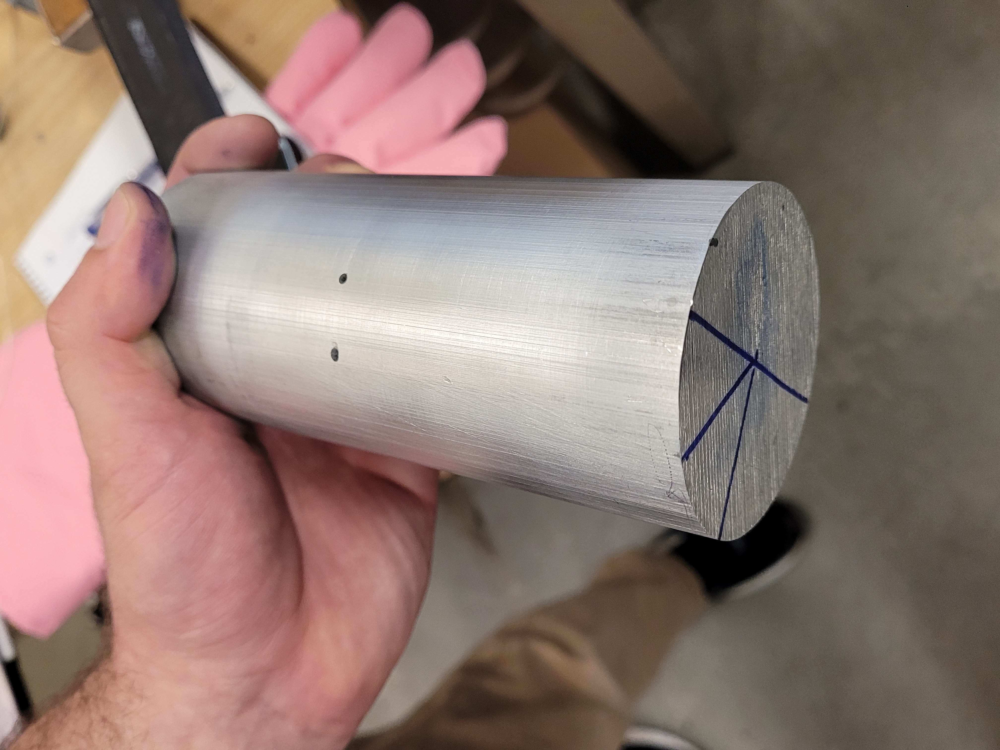
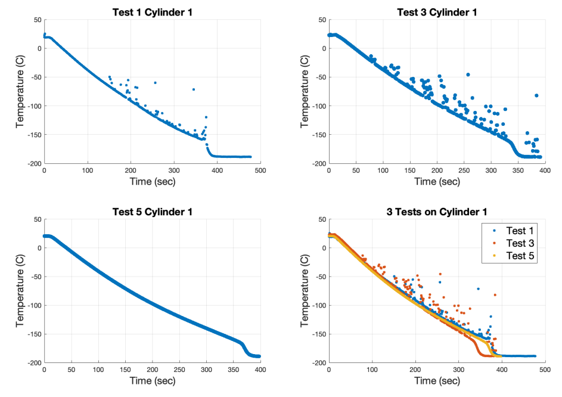

Cryogenic Boiling: Heat Transfer
Summary:
- Cryogenic Team Charlie's Mentor: Jim Hermanson
- Cryogenic Team Charlie's: Felicity Cundiff, Adam Delbow, Evelyn Madewell, and Emi Peterson
- - Investigated the use of liquid nitrogen as a cryogenic fuel, focusing on its low freezing and boiling points, abundance in the atmosphere, and inert nature
- - Addressed challenges in implementation due to the lack of consistent pool boiling data, crucial for safe storage and usage as a fuel
- - Conducted experimental research by immersing aluminum cylinders in liquid nitrogen to study boiling characteristics and heat transfer dynamics
- - Quantitatively measured temperature changes over time using thermocouples, providing insights into rapid cool-down times and heat flux during quenching
- - Contributed to enhancing understanding of cryogenic propellants for long-term space travel through comparative analysis with existing published data
- 1. Cryogenic Team Charlie's Final Report: Here
- 2. Cryogenic Team Charlie's Proposal Report: Here
- 3. Cryogenic Team Charlie's Manufacturing Report: Here
Theory / Analysis
-
This section analyzes heat transfer dynamics and the cooling process of aluminum cylinders in liquid nitrogen.
- Initial room temperature: 298 K (25°C), liquid nitrogen temperature: 77 K (-196°C).
- Biot number (Bi) calculated to assess convective heat transfer's impact using Equation 2.
- Biot number of 9 indicates significant convective heat transfer influence.
- Using "Heat Transfer: A Practical Approach" by Yunus A. Cengel, the cool-down time is calculated to be about 6.5 minutes.
-
Calculation details:
- Equation 2: Biot number calculation: \( \text{Bi} = \frac{h r}{k} = 9 \) implies \( h = 70015 \, \text{W/m}^2\text{K} \).
- Equation 3: Thermal diffusivity (\( \alpha \)): \( \alpha = \frac{k}{\rho c_p} = 9.7 \times 10^{-5} \, \text{m}^2/\text{s} \).
- Equation 4: Relationship between temperatures and time constant (\( \tau \)): \( \frac{T_i - T_\infty}{T_s - T_\infty} = A_1 e^{-\lambda_1^2 \tau} \) where \( \tau = 0.18819 \).
- Equation 5: Cool-down time calculation: \( t = \frac{\tau V}{\alpha} = 393 \, \text{seconds} \) (approximately 6.5 minutes).
-
Insights into cooling dynamics:
- Heat conduction and convective heat transfer equations are explored to understand cooling dynamics.
- Thermal properties like mass, volume, density, and specific heat capacity of the aluminum cylinder are considered.
- Thermal diffusivity (\( \alpha \)) is defined and crucial for determining temperature changes over time.
- The mass of the cylinder is calculated: \( m = \rho \pi r^2 L = 5.1835 \, \text{kg} \).
- Maximum heat transfer (\( Q_{\text{Max}} \)) is calculated: \( Q_{\text{Max}} = m c_p (T_i - T_\infty) = 674.024 \, \text{kJ} \).
-
Experimental validation:
- Theoretical predictions based on heat transfer equations are compared with experimental data.
- Validates the accuracy of the experimental setup and refines understanding of cooling dynamics.
Nomenclature:
- Bi: Biot number
- h: Heat transfer coefficient (W/m²K)
- k: Thermal conductivity (W/mK)
- r: Radius (m)
- \( \alpha \): Thermal diffusivity (m²/s)
- \( \rho \): Density (kg/m³)
- c_p: Specific heat capacity (J/kgK)
- T_i: Initial temperature (K)
- T_\infty: Ambient temperature (K)
- T_s: Surface temperature (K)
- \( \tau \): Time constant
- V: Volume (m³)
- m: Mass (kg)
- Q_{\text{Max}}: Maximum heat transfer (kJ)
Equation 2 - 5
Equation 6 - 7
Experiment Set up
Cylinders manufactured and experimented
Design of Testing Cylinders
- - The focus was on creating an effective yet practical design for testing cylinders. The design needed to provide necessary data for hypothesis evaluation while being feasible for manufacturing.
- - Two cylinders were designed: Cylinder 1 served as the baseline measurement, while Cylinder 2 measured the heat flux of liquid nitrogen. Thermocouples were inserted into specific points for temperature measurement.
- - Precise drilling of holes for thermocouple insertion was crucial. Soft jawed clamps and mills were used for accuracy. Cylinder 1 required one hole, while Cylinder 2 needed two holes for thermocouple placement.
- - The project timeline was divided into design, manufacturing, testing, and analysis phases. Challenges arose in cool-down time calculations, sourcing materials, and unexpected difficulties in manufacturing. Member-specific roles and a detailed budget were outlined, with a focus on conservation due to budget constraints.
- - Overall, meticulous planning and adaptation were essential to overcome challenges and execute the project within the allotted timeframe and budget.
Hole diagram for the Thermocouples to slide into
2D Hole diagram for the Thermocouples to slide into
Testing Objectives
-
Cryogenic Boiling Team 1 (Charlie):
- Deepening understanding of liquid nitrogen cooling by placing thermocouples along spheres' radius to measure temperature gradients.
- Addressing inconsistency from nitrogen vapor envelope by measuring temperatures within the cylinder's surface plane.
- Analyzing temperature gradients across spheres to enhance precision using the heat transfer equation.
- Improving uncertainty analysis for cryogenic propellant storage and transfer systems.
Thermocouple

Cylinder 2 displayed
-
Testing Process:
- Dipped aluminum cylinders in liquid nitrogen, monitored temperature shifts with thermocouples.
- Cylinder 1 focused on core temperature change; Cylinder 2 measured core and surface temperatures.
- Monitored temperature gradient and cooling time to 2% of liquid nitrogen's temperature (about 77 Kelvin).
- Considered factors like liquid nitrogen temperature, cylinder size, container conditions.
- Recorded room temperature, liquid nitrogen depth, and maintained consistent initial volume.
- Varied cylinder hole configurations to test impact on cooling rates.
- Detailed procedures and parameters in Appendices E and F for further insights.
Cylinder after dipped in liquid nitrogen bucket
Cylinder after dipped in liquid nitrogen bucket
Cylinder being dipped in liquid nitrogen bucket
Cylinder dipped in liquid nitrogen bucket
Heat Flux Code:
close all
T4= table2array(readtable('Test4C2.xlsx'));
T6= table2array(readtable('Test6C2.xlsx'));
T= T4(1:342,2)+273; %temperature at center, convert to K
k=0.29*T+70; %k changes as temp changes
d=( T4(1:342,3) - T4(1:342,2)) / 0.0143;
% d=dT/dr so (temp at center - temp at 3/4) / radius difference
q= -k.*d; %heat flux eq
% change in temperature of object from ambient
dT=abs( (T4(1:342,2)+273) - (294) );
figure(1)
plot(dT,q)
%%
T= T4(1:342,2)+273; %temperature at center, convert to K
k=0.29*T+70; %k changes as temp changes
d=( T4(1:342,2)+273 - T4(1:342,3)+273) / 0.0143;
% d=dT/dr so (temp at center - temp at 3/4) / radius difference
q= -k.*d; %heat flux eq
% change in temperature of object from ambient
dT=abs( (T4(1:342,2)+273) - (294) );
figure(2)
plot(dT,q)
Results and Discussions
- In this experiment, we explored heat transfer and boiling dynamics at extremely low temperatures using two cylinders:
- Cylinder 1: Average cooling time of 382 seconds.
- Cylinder 2: Average cooling time of 310 seconds, 21% faster than expected.
- The setup differences:
- Cylinder 1 had a central hole.
- Cylinder 2 had an additional hole halfway to the surface.

Separate Plots of Temperature vs. Time for the three tests conducted on Cylinder 1, using the raw data
collected.

Separate Plots of Temperature vs. Time for the three tests conducted on Cylinder 2, using the raw data
collected.
Plot of heat flux data from experiments compared to data from the NASA report
(Left) Plot of thermal conductivity vs. temperature from published data. (Rigjt) Linearized plot of thermal
conductivity vs. temperature used in this report to calculate heat flux.
Conclusions
-
The project focused on studying heat transfer and cooling using liquid nitrogen, crucial for handling cryogenic propellants.
Researchers:- Immersed aluminum cylinders in liquid nitrogen to measure cooling times and heat flow.
- Observed one cylinder cooled in 390 seconds, matching expectations.
- Found another cylinder, with more measurements, cooled 21% faster, potentially due to surface irregularities.
-
Experimental data generally aligned with predictions but showed discrepancies with published sources.
Future research suggestions:- Use improved equipment and techniques for better accuracy.
- Test various shapes and materials to optimize heat transfer.
- Refine temperature-to-heat flux calculations for more precise results.
- Propose projects to compare different materials and shapes, aiming for clearer data comparisons.